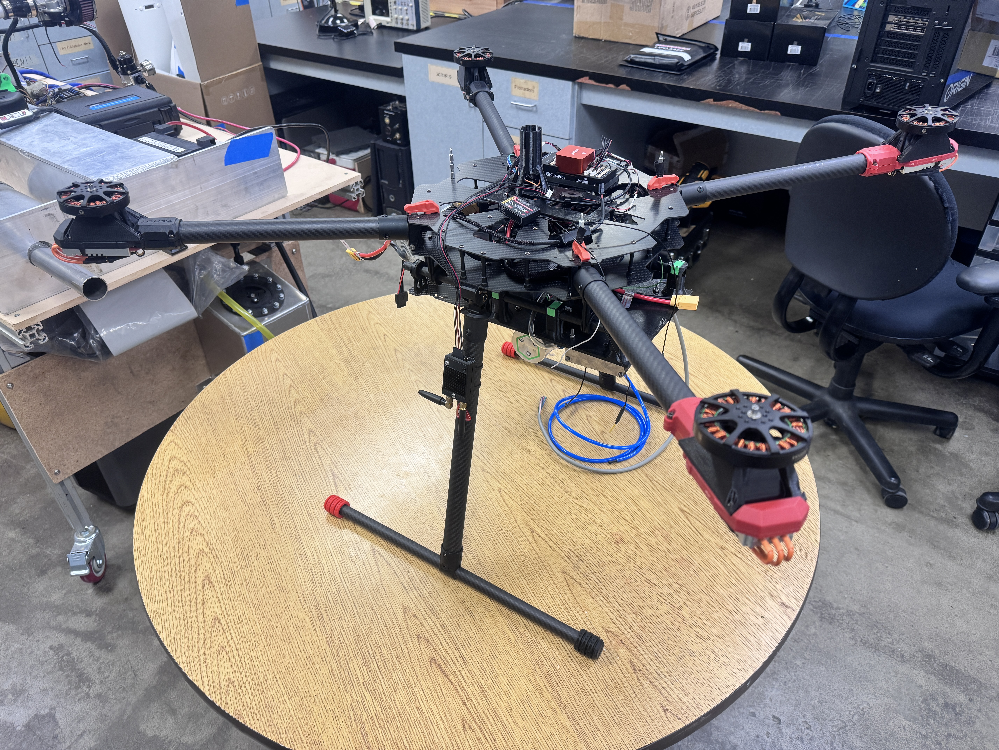
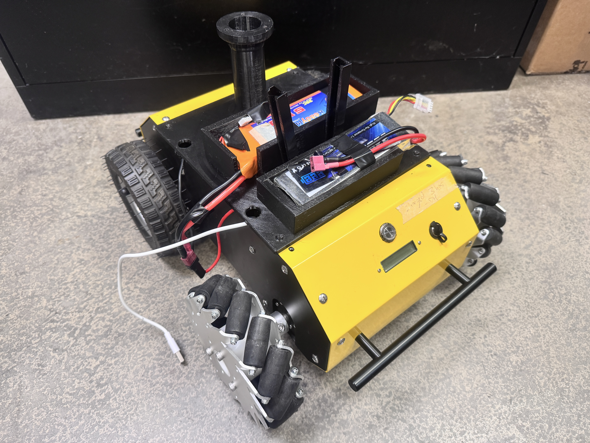
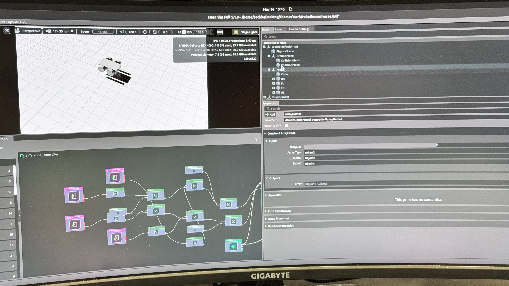

RELATED PUBLICATION / 2026
Information-Guided Safe Reinforcement Learning for Autonomous Gas Source Localization using sUAS
Sachin Giri, Thomas Zhao, Matthew Huynh, YangQuan Chen
View paper ↗02 / Autonomy / Research hardware
UAV and ground-robot platforms supporting autonomous gas-source localization and environmental sensing research.

I co-designed the UAV with another team member, including component selection, thrust and power sizing, and integration planning for future source-localization experiments. The platform is being developed alongside a ground robot and simulation workflow.
PROJECT CONTEXT
The UAV originated during planning for E2E-Methane-IQ, a proposed multi-scale methane-mapping effort combining satellite, aerial, and ground sensing across the western United States. UC Merced's proposed role focused on high-resolution sensing in the San Joaquin Valley.
The broader program did not proceed after funding was cut. UAV design work continued, and the platform is now being repurposed for autonomous gas-source localization research.
UAV CO-DESIGN / INTEGRATION
HARDWARE / SIZING / INTEGRATION
AERIAL PLATFORM
The UAV was developed through system-level component selection and sizing, with most hardware assembled from commercial components. I evaluated propulsion, batteries, frame requirements, payload capacity, and electrical demand as an integrated system alongside my co-designer.
Thrust-to-weight calculations informed motor, propeller, and electronic speed controller selection.
Current draw, power distribution, battery capacity, and estimated flight endurance were considered together.
Payload allowance and integration margin guided the configuration. Custom fabrication was limited, including motor mounts.
PHYSICAL INTEGRATION
Long component lead times delayed physical integration. The major hardware has now arrived, and the platform has been assembled for continued development.
Current work focuses on hardware verification, integration, and preparation for controlled testing. Flight performance and physical gas-source localization have not yet been validated.

GROUND PLATFORM
A pre-existing omnidirectional ground robot from another project is being repurposed as the terrestrial half of the sensing system. I did not design or build this UGV.
Its intended role is close-range localization and follow-up measurements, complementing the UAV's planned wider-area search capability.

ROS / INTENDED WORKFLOW
I contributed to early ROS-based coordination work between the UAV and UGV. The intended workflow uses aerial sensing to identify promising search regions, followed by closer-range ground localization and measurements.
Wide-area sensing and search-region identification.
Close-range localization and follow-up measurements.
This describes the planned architecture. A coordinated aerial-to-ground sensing mission has not yet been demonstrated physically.
SUPPORTING SIMULATION WORK
Simulation was used to explore ground-platform control and integration before physical experiments. I assisted with portions of the Isaac Sim setup and control workflow; the majority of this simulation development was led by another team member.

SYSTEMS ENGINEERING
The long-term challenge is connecting localization methods to sensing platforms that can operate in real environments. The UAV, UGV, simulation environment, ROS coordination, and localization framework each contribute a different layer.
My work centered on the physical aerial platform and supporting integration, helping prepare the hardware/software foundation for future testing.
RELATED RESEARCH
The broader research investigates how an sUAS can navigate turbulent concentration fields and locate an unknown gas source using information-guided planning, reinforcement learning, and safety constraints.
The source-localization and reinforcement-learning framework was primarily developed by Sachin and other research-team members. My contributions focused on UAV co-design, system integration, and supporting hardware/software work.
RELATED PUBLICATION / 2026
Sachin Giri, Thomas Zhao, Matthew Huynh, YangQuan Chen
View paper ↗PHYSICAL HARDWARE
The UAV is assembled after extended component lead times, and the project is preparing for flight and gas-sensing experiments. The ground platform is being adapted for the same research effort.
Physical testing is planned. The UAV has not yet undergone flight testing, and end-to-end gas-source localization has not been demonstrated in hardware.
SIMULATION TO VALIDATION
Localization methods, safety logic, and platform-control workflows continue to be developed in simulation. These research and simulation activities are distinct from validation of the assembled hardware.
The next work connects hardware verification, sensing integration, and controlled physical experiments.